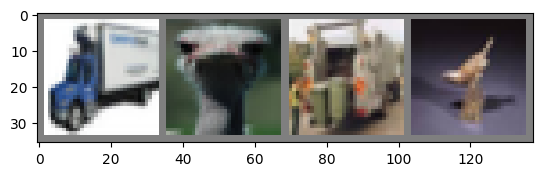

import torch
import torchvision
import torchvision.transforms as transforms
import os
batch_size = 128
NUM_WORKERS = int(os.cpu_count() / 2)
transform = transforms.Compose(
[transforms.ToTensor(),
transforms.Normalize((0.5, 0.5, 0.5), (0.5, 0.5, 0.5))])
trainset = torchvision.datasets.CIFAR10(root='./data', train=True,
download=True, transform=transform)
train_dataloader = torch.utils.data.DataLoader(trainset, batch_size=batch_size,
shuffle=True, num_workers=NUM_WORKERS)
valset = torchvision.datasets.CIFAR10(root='./data', train=False,
download=True, transform=transform)
val_dataloader = torch.utils.data.DataLoader(valset, batch_size=batch_size,
shuffle=False, num_workers=NUM_WORKERS)
classes = ('plane', 'car', 'bird', 'cat',
'deer', 'dog', 'frog', 'horse', 'ship', 'truck')
NUM_CLASSES = len(classes)
Files already downloaded and verified
Files already downloaded and verified
batch_size = 64
NUM_WORKERS = int(os.cpu_count() / 2)
transform = transforms.Compose(
[
transforms.RandomHorizontalFlip(), # FLips the image w.r.t horizontal axis
transforms.RandomRotation((-7,7)), #Rotates the image to a specified angel
transforms.RandomAffine(0, shear=10, scale=(0.8,1.2)), #Performs actions like zooms, change shear angles.
transforms.ColorJitter(brightness=0.2, contrast=0.2, saturation=0.2), # Set the color params
transforms.ToTensor(), # comvert the image to tensor so that it can work with torch
transforms.Normalize((0.491, 0.482, 0.446), (0.247, 0.243, 0.261)) #Normalize all the images
]
)
import matplotlib.pyplot as plt
import numpy as np
# functions to show an image
def imshow(img):
img = img / 2 + 0.5 # unnormalize
npimg = img.numpy()
plt.imshow(np.transpose(npimg, (1, 2, 0)))
plt.show()
# get some random training images
dataiter = iter(train_dataloader)
images, labels = next(dataiter)
# show images
imshow(torchvision.utils.make_grid(images[:4]))
# print labels
print(' '.join(f'{classes[labels[j]]:5s}' for j in range(4)))

truck bird truck bird
import torchvision
from torch import nn
import torch.nn.functional as F
from torchmetrics import Accuracy
class Net(nn.Module):
def __init__(self):
super().__init__()
self.conv1 = nn.Conv2d(3, 6, 5)
self.pool = nn.MaxPool2d(2, 2)
self.conv2 = nn.Conv2d(6, 16, 5)
self.fc1 = nn.Linear(16 * 5 * 5, 120)
self.fc2 = nn.Linear(120, 84)
self.fc3 = nn.Linear(84, 10)
def forward(self, x):
x = self.pool(F.relu(self.conv1(x)))
x = self.pool(F.relu(self.conv2(x)))
x = torch.flatten(x, 1) # flatten all dimensions except batch
x = F.relu(self.fc1(x))
x = F.relu(self.fc2(x))
x = self.fc3(x)
return x
import lightning as L
from torchmetrics import Accuracy
import timm
class MyLitModel(L.LightningModule):
def __init__(self, lr=0.05):
super().__init__()
self.save_hyperparameters()
self.model = timm.create_model("resnet18", pretrained=True, num_classes=NUM_CLASSES)
self.train_accuracy = Accuracy(task="multiclass", num_classes=NUM_CLASSES)
self.val_accuracy = Accuracy(task="multiclass", num_classes=NUM_CLASSES)
self.loss_fn = nn.CrossEntropyLoss()
def forward(self, x):
return self.model(x)
def training_step(self, batch, batch_idx):
x, y = batch
logits = self(x)
loss = self.loss_fn(logits, y)
self.log("train_loss", loss, prog_bar=True)
acc = self.train_accuracy(logits, y)
self.log("train_accuracy", acc, prog_bar=True)
return loss
def validation_step(self, batch, batch_idx):
x, y = batch
logits = self(x)
loss = self.loss_fn(logits, y)
self.log("val_loss", loss, prog_bar=True)
acc = self.val_accuracy(logits, y)
self.log("val_accuracy", acc, prog_bar=True)
def configure_optimizers(self):
optimizer = torch.optim.SGD(self.parameters(), lr=self.hparams.lr, momentum=0.9)
return optimizer
from lightning.pytorch.loggers import TensorBoardLogger
from lightning.pytorch.callbacks import EarlyStopping
model = MyLitModel(lr=0.001)
trainer = L.Trainer(
max_epochs=30,
accelerator="auto",
devices="auto",
logger=TensorBoardLogger(save_dir="logs/"),
callbacks=EarlyStopping('val_loss', patience=7),
)
trainer.fit(model, train_dataloader, val_dataloader)
GPU available: True (cuda), used: True
TPU available: False, using: 0 TPU cores
HPU available: False, using: 0 HPUs
LOCAL_RANK: 0 - CUDA_VISIBLE_DEVICES: [0]
| Name | Type | Params | Mode
--------------------------------------------------------------
0 | model | ResNet | 11.2 M | train
1 | train_accuracy | MulticlassAccuracy | 0 | train
2 | val_accuracy | MulticlassAccuracy | 0 | train
3 | loss_fn | CrossEntropyLoss | 0 | train
--------------------------------------------------------------
11.2 M Trainable params
0 Non-trainable params
11.2 M Total params
44.727 Total estimated model params size (MB)
Epoch 29: 100%|██████████| 391/391 [00:07<00:00, 53.79it/s, v_num=4, train_loss=0.604, train_accuracy=0.812, val_loss=0.863, val_accuracy=0.705]
`Trainer.fit` stopped: `max_epochs=30` reached.
Epoch 29: 100%|██████████| 391/391 [00:07<00:00, 52.40it/s, v_num=4, train_loss=0.604, train_accuracy=0.812, val_loss=0.863, val_accuracy=0.705]
### Implement test time augmentation to improve the model's performance which generates multiple images from single test image and average the result
from torch.utils.data import DataLoader
from torchvision import transforms
from torchvision.datasets import CIFAR10
from torchmetrics import Accuracy
def test_time_augmentation(model, test_dataloader, num_augmentations=5):
model.eval()
predictions = []
with torch.no_grad():
for images, _ in test_dataloader:
augmented_images = []
for _ in range(num_augmentations):
augmented_images.append(transform(images))
augmented_images = torch.stack(augmented_images)
outputs = model(augmented_images)
avg_outputs = torch.mean(outputs, dim=0)
_, predicted = torch.max(avg_outputs, 1)
predictions.append(predicted.item())
return predictions
test_dataloader = DataLoader(valset, batch_size=batch_size, shuffle=False, num_workers=NUM_WORKERS)
predictions = test_time_augmentation(model, test_dataloader, num_augmentations=5)
print(predictions)
---------------------------------------------------------------------------
TypeError Traceback (most recent call last)
Cell In[26], line 29
26 return predictions
28 test_dataloader = DataLoader(valset, batch_size=batch_size, shuffle=False, num_workers=NUM_WORKERS)
---> 29 predictions = test_time_augmentation(model, test_dataloader, num_augmentations=5)
30 print(predictions)
Cell In[26], line 18, in test_time_augmentation(model, test_dataloader, num_augmentations)
15 augmented_images = []
17 for _ in range(num_augmentations):
---> 18 augmented_images.append(transform(images))
20 augmented_images = torch.stack(augmented_images)
21 outputs = model(augmented_images)
File ~/venv/lib/python3.10/site-packages/torchvision/transforms/transforms.py:95, in Compose.__call__(self, img)
93 def __call__(self, img):
94 for t in self.transforms:
---> 95 img = t(img)
96 return img
File ~/venv/lib/python3.10/site-packages/torchvision/transforms/transforms.py:137, in ToTensor.__call__(self, pic)
129 def __call__(self, pic):
130 """
131 Args:
132 pic (PIL Image or numpy.ndarray): Image to be converted to tensor.
(...)
135 Tensor: Converted image.
136 """
--> 137 return F.to_tensor(pic)
File ~/venv/lib/python3.10/site-packages/torchvision/transforms/functional.py:142, in to_tensor(pic)
140 _log_api_usage_once(to_tensor)
141 if not (F_pil._is_pil_image(pic) or _is_numpy(pic)):
--> 142 raise TypeError(f"pic should be PIL Image or ndarray. Got {type(pic)}")
144 if _is_numpy(pic) and not _is_numpy_image(pic):
145 raise ValueError(f"pic should be 2/3 dimensional. Got {pic.ndim} dimensions.")
TypeError: pic should be PIL Image or ndarray. Got <class 'torch.Tensor'>